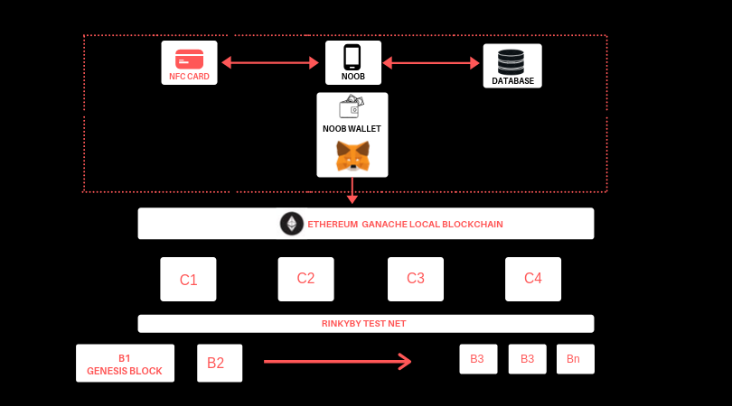
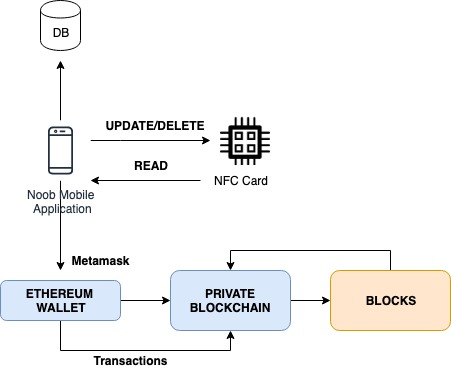
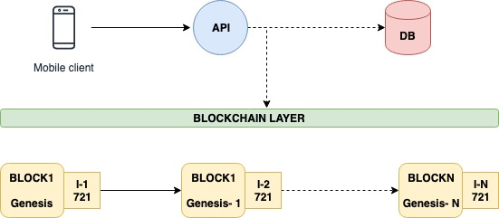
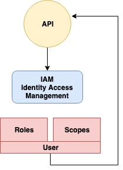

Welcome to Noob’s documentation!¶
Introduction¶
The project is named as NOOB (NFC Operations on Blockchain) . SpiderTwin Solutions Assignment.
NOOB ( NFC Operations on Blockchain) is an application which is used to track the supply chain management of goods using blockchain as an underlying technology. It is a highly scalable mobile application which can be connected to any NFC card to make all the CRUD (Create, Read, Update and Delete) operations. This application allows the user to scan the product which is tagged using a particular NFC tag and retrieve the information. Each NFC tag is priorly infused with all the information of the relevant product/good.
Once the backend system authenticates and authorises a particular user, they can modify the data present on the NFC tag and hence the record is saved in the Blockchain network. This happens by creating a block in the blockchain network and validating it.
Note
In this prototype we are using Ganache as a local blockchain to simulate Ethereum Network.
Below are the main aspects of it’s architecture.
The Mobile application (D-App)
Authentication and Authorisation
Noob Wallet
Ethereum Local blockchain ( The peer to peer network)
Block Explorer
CRUD operations - Utilising the centralisation.
Each of these are explained individually in later sections.
The Mobile Application (D-App)¶
Noob is a mobile application, a cross platform native app which is built using Angular ionic framework. This will be the primary application to scan the NFC card and connect to the blockchain network.
Screens
One time Signup screen (Using fingerprint+ Email)
Login (Primary fingerprint)
NFC Scanner screen (Used after enabling NFC plugin in mobile settings)
Data Loader screen (Shows the accociated data)
Update and Delete screen ( to modify the data)
Functionalities
NFC Scanner
Connection to Ethereum Blockchain Network
The D-App communicates with the NFC scanner, fetchs all the data(Read) and pushes it to the local DB. Parallely it is conneted with the Wallet which is a non-determinstic wallet to store all the transactions. Each of the transaction is accociated with a block. For example if a user is authenticated and he/she updates the data of the good/product it is a transaction inside a blockchain. And Once the block is mined it get connected to the chain of blocks.
Identity Association
Identity association is one of the most important part of the application when we want to associate a token to a particular block. Here in this project I use ETH-721 token. For example if a user1 authenticates himself and tries to change the data in the system. Once he saves the data in the application his identity ( private +public key combination) gets associated to the block. This creates a chain of blocks plus chain of identities.
Application backend
The application backend is built using micorservies approach. Each micorservice is wrapped up with online services such as RabbitMQ as a service, MongoDB as a service and hosted in docker. This spins up a container which is managed by Kubernetes. This API is a centralised system which is used to pass data to the blockchain network. .. image:: images/noob4.jpg
Authentication and Authorisation¶
Authentication is used to authenticate a user based on its fingerprint. On signup the app takes fingerprint and stores it in local DB. This is the first level of authentication. In the second level, the app uses API authentication which has JWT token auth.
Authorisation is role based, the app screen changes according to the role. For example employees, distributors, service providers, authorities etc. Here we use IAM (Identity Access Management) to create roles and scopes.
The Wallet¶
Wallet is a non-determinstic state of Ethereum which is craeated by combining your public and private keys together. Wallet stores all the transactions which you do in the blockchain. For example if you update a block you have a transaction and a next block associated with it. For each transaction you pay a very small amount of ethers with a fixed gas value. Each one of them happens using smart contracts.
Ethereum Local blockchain ( The peer to peer network)¶
** Read on a blockchain is free, but write costs Gas**
In this project the ethereum local blockchain is simulated using Ganche from Truffle suite. On top of the blockchain we use smart contracts written in Solidity to make transactions. This is a 2 step process in this project.
NFC Data Genesis block - Once the mobile application reads the NFC tag. It creates a genesis block, the first originated block. Before creation of the block, it makes a transaction which is essential
to mine the block. This is the first step of read only processs. Next, the ERC-721 token is attached to the block, to uniquely identify it. This identity along with other information such as the properties of the good/product is maintained in the block.
Recurrent blocks - Now whenever a user is authenticated and the supply chain wants to change the status of the product/good, it is a write on a blockchain network. This again creates a new block which is mined and
associated to its genesis or the predecessor block. Again the ERC-721 token of that user who modified the block is attached to it.
Smart Contracts¶
All the interactions with the blockchain happens through smart contracts written in solidity and python. For example to create a transaction .
account_1 = str(res[0]["account_address"])
account_2 = data.receiver_address
private_key = str(res[0]["account_private_key"])
nonce = web3.eth.getTransactionCount(account_1)
print (account_1,account_2,data.amount)
tx = {
'nonce': nonce,
'to': account_2,
'value': web3.toWei(data.amount, 'ether'),
'gas': 2000000,
'gasPrice': web3.toWei('10', 'gwei')
}
signed_tx = web3.eth.account.signTransaction(tx, private_key)
tx_hash = web3.eth.sendRawTransaction(signed_tx.rawTransaction)
Test nets and Block Explorer¶
In this project I will use Etherscan as a block explorer and Rinkyby test net to simulate the full blockchain.
Tech Stack¶
Mobile App dev - Angular ionic
Ethereum - Truffle Suite ( Ganache, Metamask etc)
Smart Contracts - Solidity
Central system - Google App Engine for backend API